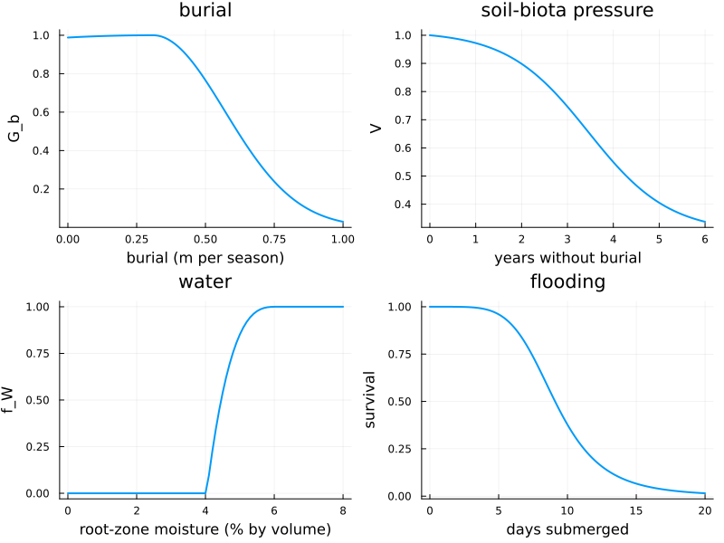
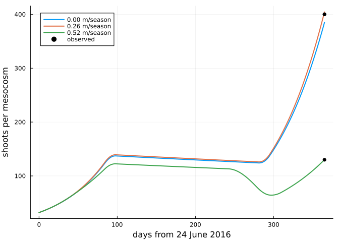
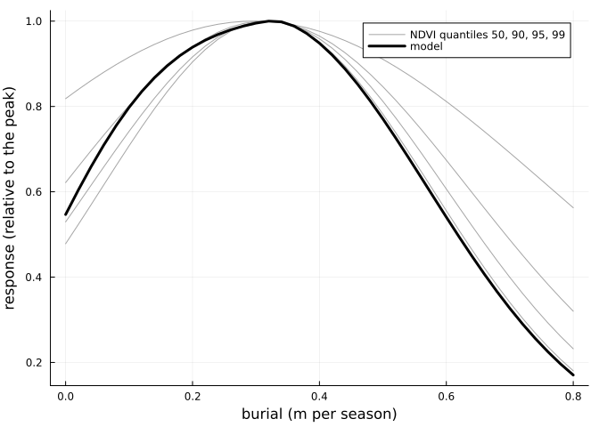
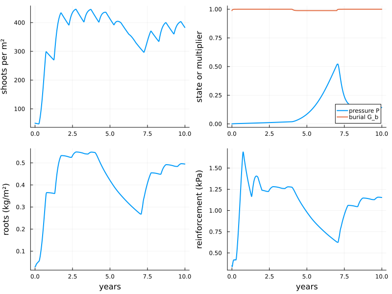

Marram grass in one cell
Simon Frost
- Overview
- Traits and evidence
- The process functions
- Calibration experiments
- Ten years of a stand
- What is not yet known
Overview
Marram grass (Calamagrostis arenaria, formerly Ammophila arenaria) builds the foredunes of north-west Europe. It grows fastest when it is buried by about 0.3 m of sand per growing season (Nolet et al. 2018). It declines where sand stops arriving, because root-feeding nematodes and pathogens build up in the sand around its roots (van der Putten et al. 1993; van der Stoel et al. 2002).
Aeolis.jl has a model of marram grass in one grid cell. Each process is a small function of the traits, with its source and evidence grade in its docstring. This vignette:
- shows the process functions;
- re-runs the published experiments to which the traits were calibrated;
- follows a stand for ten years as sand supply changes.
The next vignette puts the model on a grid.
ENV["GKSwstype"] = "100"
using Aeolis
using Dates
using Plots
using Printf
const A = Aeolis
tr = MarramTraits()Traits and evidence
The traits are listed by marram_info. Each has a unit, a range, a source, and an evidence grade:
- M: measured on marram;
- D: derived from measurements, here mostly by the calibration below;
- P: a prior without a direct measurement.
info = marram_info()
for g in (:M, :D, :P)
println(g, ": ", count(r -> r.evidence == g, info), " traits")
end
for r in info[[4, 5, 6, 7, 8]]
@printf("%-12s %6.3g %-12s %s %s\n", r.name, r.default, r.unit, r.evidence, r.source)
endM: 31 traits
D: 16 traits
P: 18 traits
burial_window 30 day P Nolet2018
burial_opt 0.31 m/season M Nolet2018
burial_c_lo 2 m/season D Reijers2021
burial_c_hi 0.26 m/season M Nolet2018
r 6.3 1/year D Reijers2021The process functions
Four of the processes, as functions of their driver:
- Burial: growth responds to the rate of burial in m per growing season, the unit used by Nolet et al. (2018). Above the optimum it falls with Nolet’s width.
- Soil-biota pressure: without burial, pressure builds up slowly at first. It costs a quarter of the vigour after three years, and it is why the field response of Nolet et al. (2018) falls below the optimum. Vigour lowers both the growth rate and the shoot density the roots can sustain.
- Water: stress acts through the root zone, with the thresholds of Homberger et al. (2026).
- Flooding: survival falls with days of continuous submergence in seawater (Aptekar and Rejmánek 2000).
d = 0:0.01:1.0
p1 = plot(d, [A.burial_response(x, tr) for x in d]; lw=2, legend=false,
xlabel="burial (m per season)", ylabel="G_b", title="burial")
yrs = 0:0.05:6
p2 = plot(yrs, [A.vigour(A.pressure_step(0.0, 0.0, y * 365.25, tr), tr) for y in yrs];
lw=2, legend=false, xlabel="years without burial", ylabel="V",
title="soil-biota pressure")
θ = 0:0.001:0.08
p3 = plot(100θ, [A.water_stress(x / tr.porosity, tr) for x in θ]; lw=2, legend=false,
xlabel="root-zone moisture (% by volume)", ylabel="f_W", title="water")
D = 0:0.1:20
p4 = plot(D, [A.flood_survival(x, tr) for x in D]; lw=2, legend=false,
xlabel="days submerged", ylabel="survival", title="flooding")
plot(p1, p2, p3, p4; layout=(2, 2), size=(800, 600))
Calibration experiments
marram_experiment re-runs each experiment and returns the model’s numbers next to the published ones.
Burial in a mesocosm
Reijers et al. (2021) buried tussocks in 6.25 m² mesocosms of fresh sand by 0, 2 or 4 cm every fortnight for a year. That is 0, 0.26 or 0.52 m per growing season.
e = marram_experiment(:reijers2021)
for i in 1:3
@printf("%.2f m/season: shoots %5.0f (observed %3.0f), root:shoot %.2f (observed %.1f)\n",
e.burial[i], e.shoots[i], e.shoots_observed[i], e.ratio[i], e.ratio_observed[i])
end0.00 m/season: shoots 385 (observed 400), root:shoot 0.45 (observed 0.5)
0.26 m/season: shoots 404 (observed 400), root:shoot 0.91 (observed 1.0)
0.52 m/season: shoots 130 (observed 130), root:shoot 2.33 (observed 2.5)This experiment constrains three traits:
- The growth rate
r: fitted to the 400 shoots of the 2 cm treatment. - The 4 cm treatment: the sand went onto the plants, and through the winter, when shoots do not elongate, it covered most of the canopy. The authors attribute the threefold loss of shoots to buried leaves. The model reproduces it through smothering, which fits the smothering time
tau_sm. - The burial response below the optimum: fresh sand without burial cost only 4 ± 2 % of the shoots, so the direct burial response must be almost flat there.
plot(; xlabel="days from 24 June 2016", ylabel="shoots per mesocosm", legend=:topleft)
for (i, s) in enumerate(e.solutions)
plot!(s.t, 6.25 .* s.N; lw=2, label=@sprintf("%.2f m/season", e.burial[i]))
end
scatter!([365, 365, 365], e.shoots_observed; color=:black, label="observed")
Burial in the field
On a foredune planted in 2011, Nolet et al. (2018) related the change in NDVI and cover over the 2015 growing season to burial. They fitted Gaussian curves by quantile regression.
The model’s response is that of a stand buried at a constant rate for four years. Below the optimum it is lowered by the soil-biota pressure that builds up without burial. This fits the time scale tau_P and the burial d_f that relieves pressure. The two studies are fitted jointly: the mesocosm, on fresh sand, sees almost no pressure in one year, while the four-year-old planting sees half its vigour lost without burial.
e = marram_experiment(:nolet2018)
plot(e.burial, e.ndvi_observed; lw=1, color=:gray, alpha=0.7,
label=["NDVI quantiles 50, 90, 95, 99" "" "" ""], xlabel="burial (m per season)",
ylabel="response (relative to the peak)")
plot!(e.burial, e.response; lw=3, color=:black, label="model")
Drought, flooding and heat
Three more experiments test water and flooding:
- Drought: Dixon et al. (2004) withheld water for four weeks, and 80 % of marram plants recovered.
- Flooding: Aptekar and Rejmánek (2000) submerged rhizomes in seawater. Survival is the viability of their buds relative to the controls.
- Heat and drought: in a hot July without rain, the transplants of Lammers et al. (2024) were unaffected, although the top 10 cm of sand dried out. The model has no surface moisture. Its sparse planting transpires little, so the root zone stays moist.
e = marram_experiment(:dixon2004)
@printf("drought: survival %.2f (observed %.2f)\n", e.survival, e.survival_observed)
e = marram_experiment(:aptekar2000)
for i in eachindex(e.days)
@printf("submerged %4.0f days: survival %.2f (observed %.2f)\n", e.days[i],
e.survival[i], e.survival_observed[i])
end
e = marram_experiment(:lammers2024)
@printf("heat and drought: growth relative to ambient %.3f (observed 1, no difference)\n",
e.growth_ratio)drought: survival 0.81 (observed 0.80)
submerged 1 days: survival 1.00 (observed 0.85)
submerged 3 days: survival 1.00 (observed 1.02)
submerged 7 days: survival 0.80 (observed 0.80)
submerged 13 days: survival 0.13 (observed 0.13)
heat and drought: growth relative to ambient 0.999 (observed 1, no difference)A fourth, Homberger et al. (2024), grew marram in pots at seven levels of watering. It is a test the model only partly passes:
- Driest pots: plants died at a mean soil moisture of 3.3-4.8 % by volume. The model also kills them there, because that is below wilting.
- Wetter pots: their plants grew more with every step of water, but the model’s stress function, from Homberger et al. (2026), is saturated above about 6 %.
The two papers’ moisture thresholds do not agree, and the model follows the 2026 values.
e = marram_experiment(:homberger2024)
for i in eachindex(e.moisture)
@printf("moisture %4.1f %%: shoots x %.2f over 132 days\n", 100e.moisture[i], e.shoots[i])
endmoisture 4.0 %: shoots x 0.03 over 132 days
moisture 6.2 %: shoots x 3.09 over 132 days
moisture 8.4 %: shoots x 3.09 over 132 days
moisture 10.6 %: shoots x 3.09 over 132 days
moisture 12.8 %: shoots x 3.09 over 132 days
moisture 15.0 %: shoots x 3.09 over 132 days
moisture 17.2 %: shoots x 3.09 over 132 daysTen years of a stand
A stand is followed through two kinds of change in its sand supply:
- Years 0-4: 0.3 m of sand per growing season, about the optimum.
- Years 4-7: no burial; the beach is cut off.
- Years 7-10: burial resumes.
simulate_marram records every multiplier, so the cause of each change can be read off.
z(t) = (4 * 365 <= t < 7 * 365) ? 0.0 : 0.3 / A.season_length(tr)
sol = simulate_marram(MarramCell(; N=50.0, h=0.4, Br=0.03, zr=0.3),
(t, d) -> (; dzb=z(t), s=tr.s_fc), tr; days=3650,
start=Date(2020, 1, 1))
yr = sol.t ./ 365.25
p1 = plot(yr, sol.N; lw=2, legend=false, ylabel="shoots per m²")
p2 = plot(yr, sol.P; lw=2, label="pressure P", ylabel="state or multiplier")
plot!(p2, yr, sol.Gb; lw=2, label="burial G_b")
p3 = plot(yr, sol.Br; lw=2, legend=false, ylabel="roots (kg/m²)", xlabel="years")
p4 = plot(yr, sol.cr; lw=2, legend=false, ylabel="reinforcement (kPa)", xlabel="years")
plot(p1, p2, p3, p4; layout=(2, 2), size=(800, 600))
A few points about this run:
- Without burial, pressure builds up and the stand thins, from about 420 to 310 shoots per m² in three years.
- Roots grow within weeks toward a target that rises with burial. Above the target they die back over years, so reinforcement falls more slowly than the target does.
- When sand returns, most of the pressure is relieved within months. The stand recovers most of its shoots in two years.
- Reinforcement stays within the 0.5-5 kPa measured in dune sand.
What is not yet known
These traits rest on little evidence and are reported with ranges in marram_info:
- Burial response: from one site, one growing season and one mesocosm; it was not confirmed on Ameland (Keijsers et al. 2015).
- Pressure: its strength
p_maxand seedP_seedare priors. The fitted time scale depends on them. - Smothering: the time scale is fitted to one treatment, assuming no elongation in winter.
- Roots: the tensile strength of marram roots has not been measured.
- Flooding: survival comes from rhizome fragments, not whole plants.
Aptekar, Rachel, and Marcel Rejmánek. 2000. “The Effect of Sea-Water Submergence on Rhizome Bud Viability of the Introduced Ammophila arenaria and the Native Leymus mollis in California.” Journal of Coastal Conservation 6: 107–11. https://doi.org/10.1007/BF02730474.
Dixon, Jennifer M., Michael J. Hilton, and Peter Bannister. 2004. “Desmoschoenus spiralis Displacement by Ammophila arenaria: The Role of Drought.” New Zealand Journal of Ecology 28 (2): 207–13. https://newzealandecology.org/nzje/2227.
Homberger, Jan-Markus, Aaron Lynch, Michel Riksen, and Juul Limpens.
- “Growth Response of Dune-Building Grasses to Precipitation.”
Ecohydrology 18 (2): e2634. https://doi.org/10.1002/eco.2634.
Homberger, Jan-Markus, Glenn Strypsteen, Abbey L. Marcotte, Sasja van Rosmalen, Michel Riksen, and Juul Limpens.
- “Plant-Water Interactions Shape Coastal Dune Evolution in a
Changing Climate.” Journal of Hydrology 668: 134921. https://doi.org/10.1016/j.jhydrol.2026.134921.
Keijsers, Joep G. S., Alma V. De Groot, and Michel J. P. M. Riksen.
- “Vegetation and Sedimentation on Coastal Foredunes.”
Geomorphology 228: 723–34. https://doi.org/10.1016/j.geomorph.2014.10.027.
Lammers, Carlijn, Paul M. J. Berghuis, Angeles G. Mayor, Valérie C. Reijers, Max Rietkerk, and Tjisse van der Heide. 2024. “Extreme Heat and Drought Did Not Affect Interspecific Interactions Between Dune Grasses.” Estuarine, Coastal and Shelf Science 311: 109020. https://doi.org/10.1016/j.ecss.2024.109020.
Nolet, Corjan, Marinka van Puijenbroek, Juha Suomalainen, Juul Limpens, and Michel Riksen. 2018. “UAV-Imaging to Model Growth Response of Marram Grass to Sand Burial: Implications for Coastal Dune Development.” Aeolian Research 31: 50–61. https://doi.org/10.1016/j.aeolia.2017.08.006.
Reijers, Valérie C., Selwyn Hoeks, Jim van Belzen, et al. 2021. “Sediment Availability Provokes a Shift from Brownian to L<span class="nocase">évy</span>-Like Clonal Expansion in a Dune Building Grass.” Ecology Letters 24: 258–68. https://doi.org/10.1111/ele.13638.
van der Putten, Wim H., Cor van Dijk, and B. A. M. Peters. 1993. “Plant-Specific Soil-Borne Diseases Contribute to Succession in Foredune Vegetation.” Nature 362: 53–56. https://doi.org/10.1038/362053a0.
van der Stoel, Corine D., Wim H. van der Putten, and Henk Duyts. 2002. “Development of a Negative Plant-Soil Feedback in the Expansion Zone of the Clonal Grass Ammophila arenaria Following Root Formation and Nematode Colonization.” Journal of Ecology 90: 978–88. https://doi.org/10.1046/j.1365-2745.2002.00727.x.